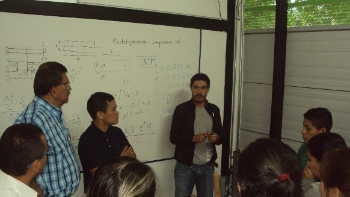

Comunidad universitaria
Docencia e investigación
Encuentra capacidades para tu proyecto y prepara el acceso al laboratorio.

Estudiantes
Voy a realizar una práctica
Identifica el laboratorio y confirma las condiciones de acceso.
Explorar →InvestigadoresBusco una capacidad para investigar
Explora laboratorios y consulta equipos o servicios relacionados.
Explorar →Paso a paso · Antes de asistir
Prepara tu práctica
- Encuentra el laboratorioBusca por facultad o consulta con el docente responsable.
- Confirma autorización y condicionesVerifica el procedimiento, los horarios y los requisitos con el laboratorio.
- Revisa la preparación de seguridadConsulta inducciones y recursos aplicables a tu actividad.
- Confirma tu accesoUsa el canal definido por el laboratorio. Una consulta no equivale a una reserva.